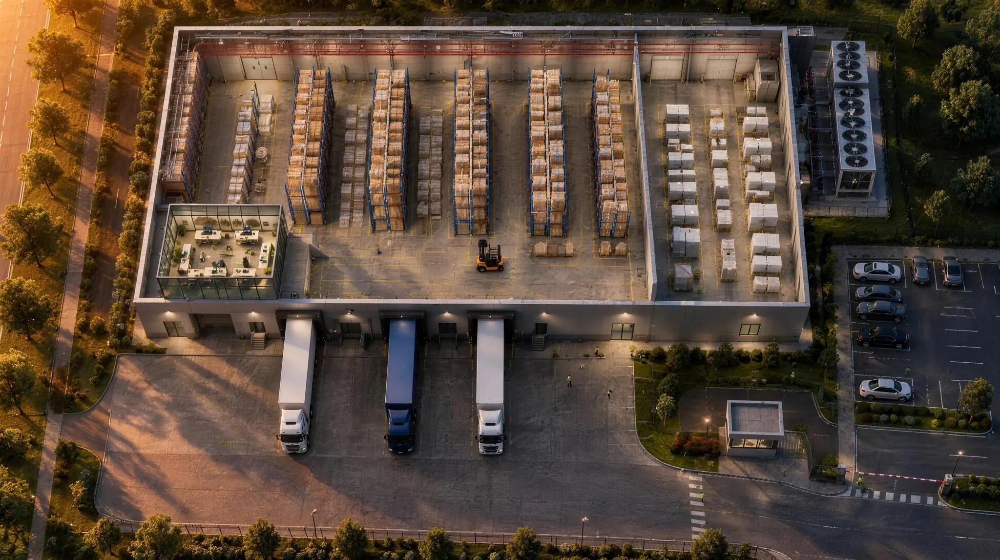
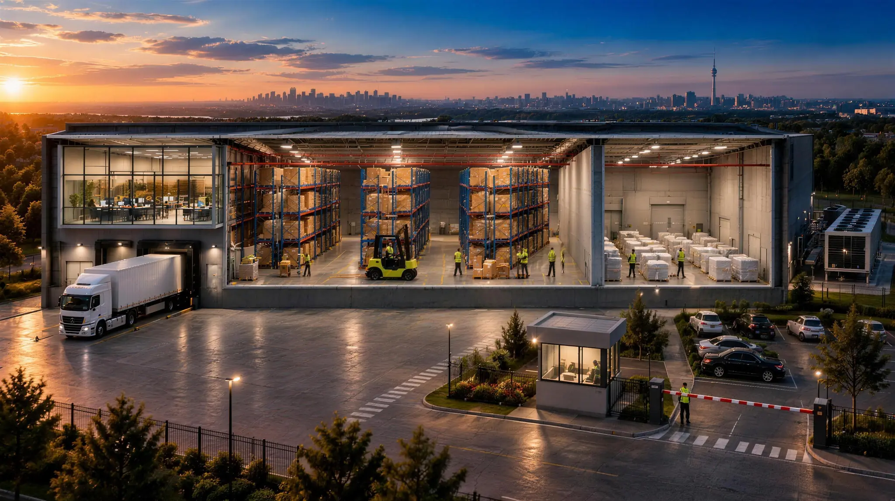

Пройдіться складом і подивіться, де виникає ризик.
Натисніть на будь-яку частину складу: побачите, що там може статися, чий це ризик і яким страхуванням він покривається. Або пройдіть тур від воріт до будівлі.


Тягніть фото вбік, щоб покрутити склад · натисніть на позначку, щоб побачити ризики
Усі зони складу
Десять місць, де виникає збиток.
Те саме, що й на фото, тільки списком. Кожну зону можна показати на складі.
01
В’їзд і охорона
Чий ризик: власник, оператор і орендарі
Що може статися
Крадіжка зі зломом або грабіж
Проникнення на територію в неробочий час
Пошкодження воріт і огорожі транспортом
Чим покривається
Страхування майна і товарів від крадіжки та протиправних дій третіх осіб
Страхування огорожі й воріт як частини майнового комплексу
Модельна ситуація
Уночі через пошкоджену огорожу винесли частину товару. Виплата залежить від того, як у договорі описані вимоги до охорони й сигналізації. Їх варто звірити з реальністю ще до підписання.
02
Двір і відвідувачі
Чий ризик: власник або оператор, залежно від договору
Що може статися
Травма водія, кур’єра чи відвідувача на території
Пошкодження чужого автомобіля під час маневрів
Шкода сусідній ділянці, наприклад пожежа перекинулася на сусідів
Чим покривається
Страхування цивільної відповідальності перед третіми особами
Модельна ситуація
Водій постачальника посковзнувся на обмерзлому майданчику біля рампи й зламав руку. Вимогу він пред’являє тому, хто відповідає за утримання території.
03
Вантажівка: товар у дорозі
Чий ризик: власник вантажу, перевізник, експедитор
Що може статися
Пошкодження або втрата вантажу в дорозі: ДТП, перекидання, крадіжка
Ліміт відповідальності перевізника не покриває вартість вантажу
Штрафи й простій через зірвану поставку
Чим покривається
Страхування вантажу (карго)
Страхування відповідальності перевізника та експедитора, зокрема за CMR
Модельна ситуація
Перевізник пошкодив партію електроніки. За CMR його відповідальність обмежена 8,33 SDR за кілограм, а для легкого дорогого вантажу це лише частина вартості. Різницю покриває тільки страхування самого вантажу.
Пошкодження вантажу клієнта під час навантаження і розвантаження
Пошкодження будівлі, рампи чи воріт технікою
Травма працівника
Поломка навантажувача
Чим покривається
Страхування відповідальності оператора складу перед клієнтами
Страхування спецтехніки
Страхування працівників від нещасних випадків
Модельна ситуація
Під час навантаження оператор помилився, і вантаж клієнта пошкоджено. Страховик клієнта виплачує йому відшкодування і звертається з регресом до оператора як до винної сторони.
05
Стелажі з товаром
Чий ризик: власник товару та оператор, який його зберігає
Що може статися
Пожежа, вибух, залиття
Падіння або обвал стелажа разом із товаром
Крадіжка
Недостача без видимих слідів події: більшість полісів її виключає
Чим покривається
Страхування товарів на складі, власних або прийнятих на зберігання
Страхування відповідальності зберігача за товар на відповідальному зберіганні
Модельна ситуація
Навантажувач зачепив стійку, і ярус стелажа склався разом із товаром двох клієнтів. Збиток клієнтам відшкодовує оператор або його страховик, якщо відповідальність застрахована.
06
Сусідній орендар
Чий ризик: орендарі та власник
Що може статися
Пожежа або залиття в сусіда переходить на ваш товар
Ваша подія пошкоджує товар сусіда або будівлю
Орендар після збитку стає неплатоспроможним, і власник втрачає орендну плату
Чим покривається
Страхування власного товару незалежно від того, хто винен
Відповідальність орендаря перед власником та іншими орендарями
Для власника: страхування втрати орендної плати
Модельна ситуація
Пожежа в сусіднього орендаря. Під час гасіння ваш товар залили водою. Прямого винуватця немає, тож пред’являти претензію нікому. Допоможе лише страхування власного товару.
07
Система пожежогасіння
Чий ризик: власник будівлі та всі, чий товар під нею
Що може статися
Хибне спрацювання або прорив труби заливає товар
Несправна система не зупиняє пожежу
Товар псується від води й піни під час гасіння
Чим покривається
Страхування майна з ризиком «пошкодження водою із систем пожежогасіння»
Страхування товарів від вогню та наслідків гасіння
Модельна ситуація
Узимку замерзла й тріснула труба спринклерної системи, і вода залила два ряди стелажів. Чи буде виплата, залежить від того, чи цей ризик є в договорі і чи виконувалися умови обслуговування системи.
08
Інженерні системи та обладнання
Чий ризик: власник обладнання та власник товару
Що може статися
Коротке замикання й пожежа від електрощитової
Поломка холодильного обладнання і псування товару
Перебої з електроживленням
Чим покривається
Страхування обладнання від поломок
Страхування товару від псування через збій температурного режиму
Страхування перерви в діяльності через пошкодження обладнання
Модельна ситуація
На вихідних вийшов з ладу компресор холодильної камери, і товар клієнта зіпсувався. Звичайний поліс на майно таку подію часто не покриває, потрібен окремий ризик.
09
Оператор складу: окрема компанія
Чий ризик: оператор складу
На складі часто працює оператор: окрема юридична особа, якій не належать ні будівля, ні товар. Вона приймає, зберігає й відвантажує чужий вантаж і відповідає за нього перед клієнтами та власником.
Що може статися
Вимоги клієнтів за товар на відповідальному зберіганні
Страхування працівників від нещасних випадків і медичне страхування
Модельна ситуація
Клієнт оператора застрахував свій товар. Після пожежі його страховик виплатив відшкодування і пред’явив регрес оператору як зберігачу. Без поліса відповідальності ця сума лягає на самого оператора.
10
Будівля складського комплексу
Чий ризик: власник, а відповідальність за пошкодження ще й на операторі та орендарях
Що може статися
Пожежа, вибух, удар блискавки
Стихійні явища, вага снігу на покрівлі
Перерва в бізнесі, поки будівлю не відновлено
Збиток, який доходить до вартості всього комплексу
Чим покривається
Страхування будівлі та майнового комплексу
Страхування перерви в діяльності: втрата орендної плати або прибутку
Відповідальність оператора й орендарів перед власником за пошкодження будівлі
Модельна ситуація
Пожежа пошкодила комплекс. Страховик власника виплачує відшкодування і використовує право регресу до винної сторони. Нею може виявитися орендар або оператор, і для них регрес означає серйозні фінансові проблеми.
Хто є хто на складі
Одна будівля, кілька компаній.
Власник здає склад в оренду оператору та орендарям. Оператор надає складські послуги своїм клієнтам. У кожного свої ризики, і поліс одного не захищає іншого.
Власник складу
Будівля і дохід від неї
Пошкодження будівлі складу
Перерва в бізнесі через пошкодження будівлі
Пошкодження товару орендарів
Втрата орендаря, якщо після збитку він стає неплатоспроможним
Шкода життю та здоров’ю третіх осіб
Ключові поліси: майно і будівля, перерва в діяльності, відповідальність перед третіми особами.
Оператор складу
Чужий товар у ваших руках
Відповідальність за пошкодження будівлі складу
Перерва в бізнесі через пошкодження будівлі
Пошкодження товару клієнтів під час роботи
Шкода життю та здоров’ю працівників і третіх осіб
Ключові поліси: відповідальність складського оператора, відповідальність перед орендодавцем, спецтехніка, працівники.
Орендар
Свій товар серед чужих
Відповідальність за пошкодження будівлі складу
Перерва в бізнесі через пошкодження будівлі
Пошкодження товару інших орендарів
Пошкодження власного товару через дії сусідів або несправність комплексу
Шкода життю та здоров’ю працівників і третіх осіб
Ключові поліси: власний товар, відповідальність перед власником та іншими орендарями.
Конкретні ризики, ліміти, франшизи та виключення визначаються програмою і договором страхування. Приклади на цій сторінці модельні й показують типову логіку, а не умови конкретного страховика.
Розберемо ваш склад так само, тільки по-справжньому.
Подивимося на договори оренди й зберігання, знайдемо, де у вас немає покриття, і проведемо тендер серед страховиків. Перша зустріч безоплатна, онлайн або особисто в Києві.